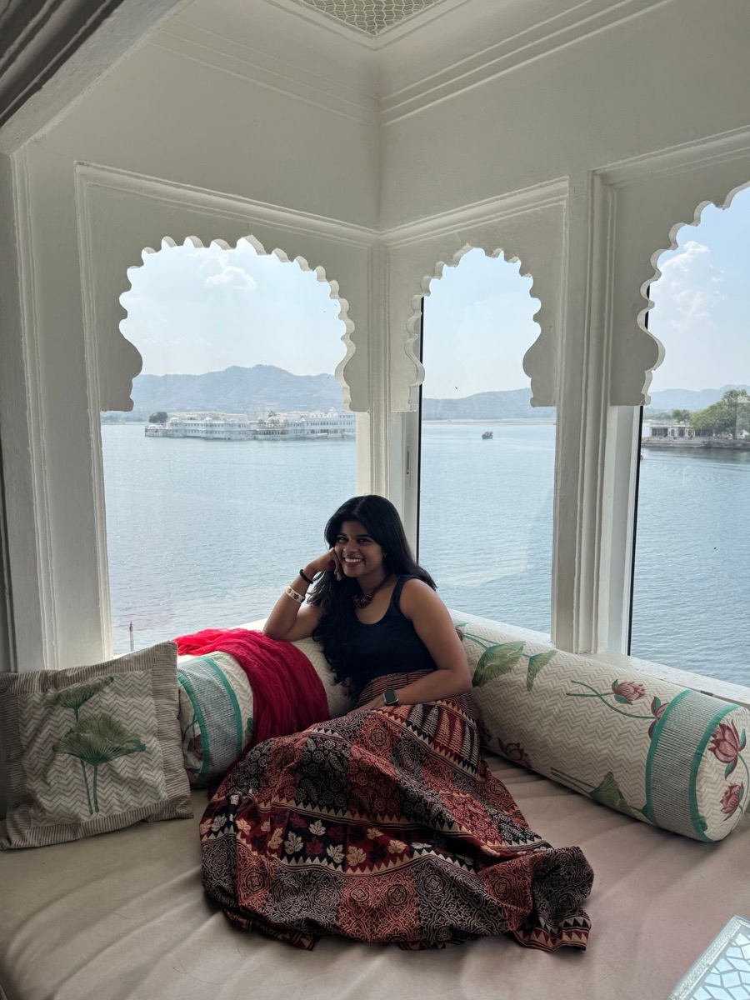

Painting
Watercolours help me notice balance, contrast, space, and emotion.
Senior UX Designer
I’m Nikita Joseph, a Senior UX Designer with 4+ years at FYERS. I turn complex trading, investing, learning, and AI-assisted flows into clear, usable products — from research and interviews to prototypes and shipped work.
Selected work
A look at fintech products I shaped across trading, investing, learning, dashboards, and AI-assisted experiences.
Turning market learning into a hands-on practice experience.
Read the storyMaking holdings, performance, and investment details easier to read and act on.
Read the storyHelping partners track clients, onboarding, earnings, tickets, and performance in one clear place.
Read the storySimplifying fast-moving trading flows where clarity, timing, and trust matter.
Read the storyCareer
My journey at FYERS has moved across product design, research, shipping, hiring, innovation, and AI-assisted building.
Started designing fintech experiences across trading and investing products.
Took on larger flows, dashboards, mobile experiences, and cross-functional design decisions.
Worked across trading, investing, learning, partner dashboards, onboarding, and product improvements.
Interviewed candidates and helped hire 3–4 people across junior design, senior UX design, and UX research roles.
Explored AI-assisted product ideas and faster prototyping approaches.
Designed and built a full-fledged Android app in 3 months using Claude, VS Code, GitHub, and AI-assisted workflows, while also experimenting with tools like ElevenLabs and HeyGen.
How I work
I believe good UX comes from asking many questions, sitting with complexity, and slowly removing what does not help.
My work usually starts messy — interviews, notes, edge cases, flows, constraints, doubts — and becomes clearer through structure, iteration, and care.
AskStart with questions, not screens. Interviews, notes, and data come before pixels.
MapConnect the notes into a flow, then go looking for where it breaks.
SimplifyKeep what matters. Remove what confuses. Then test whether anyone misses it.
ShipGet it into people’s hands, watch what happens, and improve it.
Off-screen
Painting, travelling, crafts, and workouts keep me observant, patient, curious, and disciplined — the same qualities I bring into product design.
Watercolours help me notice balance, contrast, space, and emotion.
Travel keeps me curious about people, behaviour, culture, and context.
Handmade work reminds me that small details can change the whole experience.
Fitness teaches consistency, focus, and showing up even when it is hard.

Craft
Watercolours taught me to notice balance, contrast, space, and emotion. Product design taught me to turn those instincts into systems, flows, and decisions people can use.
p.s.
I’d love to help make it make sense.